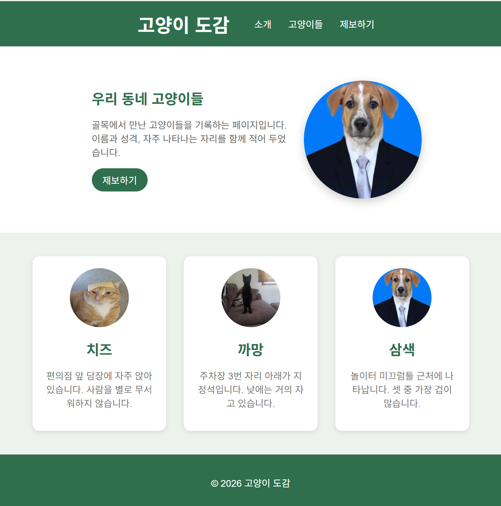

기간 2026.08.04 ~ (지금도 진행 중 — 최신 진행 상황은 위 Current Project 참고)
한 줄 소개 웹 프론트엔드부터 파이썬까지 단계별로 배우는 청년 일경험 프로그램 (청년 피지컬AI 1기)
담당 역할 교육생으로 매일 실습 과제를 수행하고 결과물을 정리
사용 기술 HTML, CSS, JavaScript, Python (Jupyter Notebook)
느낀 점 진행 중인 프로젝트라 작성 예정
자료 (이미 지난 실습 내용을 날짜별로 아카이브)
- 08.04–05 회원가입 폼 실습
- 08.05–06 이력서 작성 실습
- 08.06 프로필 카드 실습
- 08.07 STUDY.OS 기획서
- 08.07 AI 도구 트렌드 보고서
- 08.10 Python 기초 노트북
- 08.11–12 Python 조건문·반복문 노트북